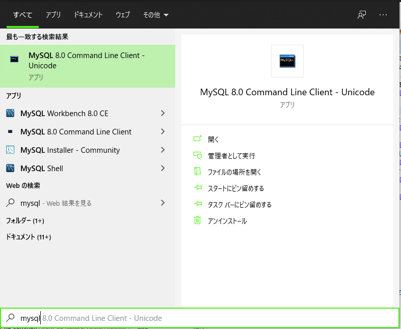
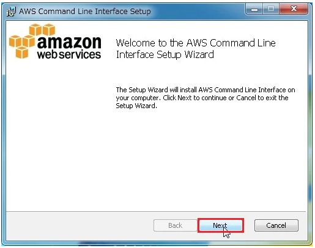
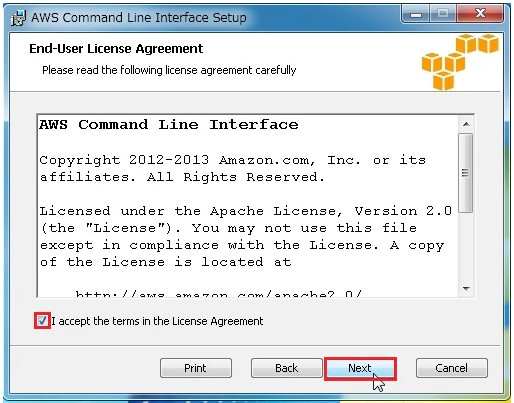
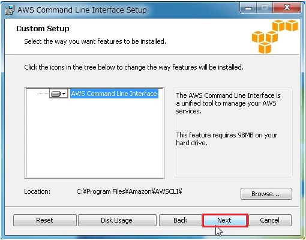
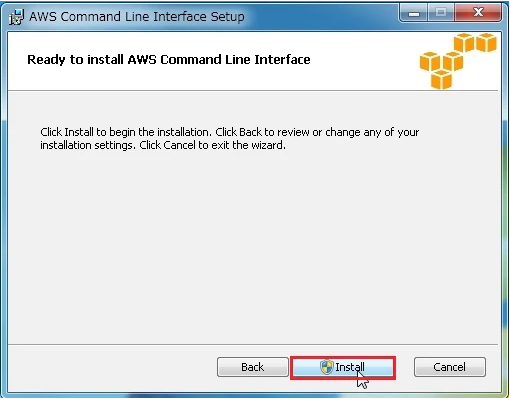
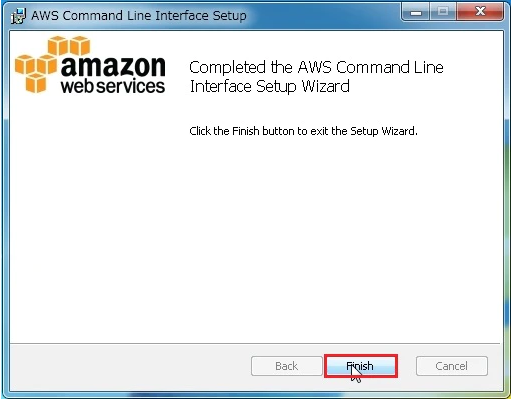
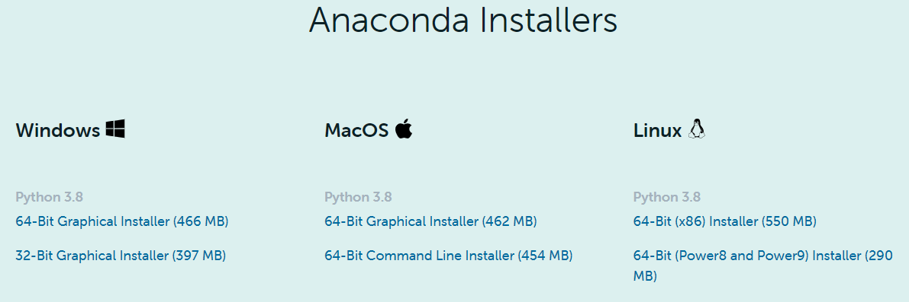
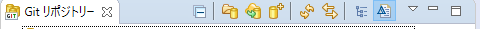
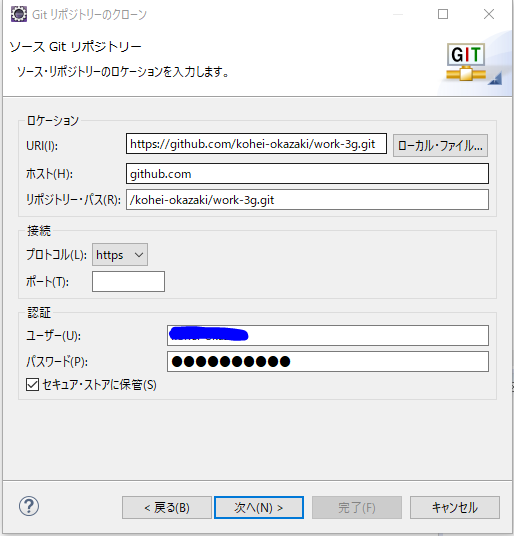
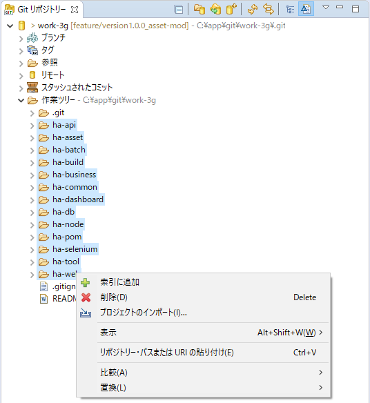

環境構築手順
概要
DB構築手順
ツール一覧
実際に各Tableに対し、DDLなどの適用はmavenコマンドよりFlywayが行うため直接SQLを流さなくてよい
ダウンロード手順公式より以下の手順でMySQLをローカルPCにダウンロードして下さい 以下ダウンロード手順は2016年頃のもののため、画面が更新されている可能性があります
インストール手順上記、ダウンロード手順を実施してあることを前提です
MySQL初期設定
ユーザとパスワードを設定以下のファイルのuserとpasswordにインストール時に指定したものを設定 ha-common/profile/local/jdbc.properties
データベース作成「Windowsキー」押下、「mysql」と入力し以下画像のように「MySQL 8.0 Command Line Clinet」ツールを選択 以下のファイルMySQLクライアントから実行し、データベース「work3g」を作成する /ha-asset/02_db/others/CREATE_DATABASE.sql |
||||||||||||||||||||||||||||||||||||||||||||||||||||||||||||||||||||||||||
Java環境構築手順
Java インストールAmazon CorrettoのJava8から各PCのOSに合わせ、Java8をインストール コマンドプロンプトまたはターミナルより以下をコマンドを実行 $java -version以下の結果が出力されていればOK（メジャーバージョンである8系が出力されていればOK） openjdk version "1.8.0_252"OpenJDK Runtime Environment Corretto-8.252.09.2 (build 1.8.0_252-b09) OpenJDK 64-Bit Server VM Corretto-8.252.09.2 (build 25.252-b09, mixed mode) AWS CLI インストール手順（Windows）Windowsの場合よりインストーラをダウンロード ダウンロードしたインストーラ AWSCLI64PY3.msi を実行し、「Next」ボタン押下 チェックボックスにチェックを付け、「Next」ボタン押下 「Next」ボタン押下 「Install」ボタン押下 「Finish」ボタン押下 上記インストールが正常に完了後、コマンドプロンプトより以下のコマンドを実行 aws --version以下の結果が出力されていればOK（バージョンは任意とする） aws-cli/2.0.10 Python/3.7.5 Windows/10 botocore/2.0.0dev14AWS CLI ユーザを設定次に以下のコマンドでローカル端末にAWSのIAMユーザを設定 aws configure
上記設定を行わない場合、ローカルで呼び出すAWS-SDKの処理に失敗し、一部機能が使えない
ローカルTomcatサーバ構築Eclipseを開き、以下の操作で 「Java インストール」で設定したJavaを参照するようにする ウィンドゥ -> 設定 -> Java -> インストール済のJRE -> インストール済のJRE -> 標準VM
次にローカルサーバの構築を行う
|
||||||||||||||||||||||||||||||||||||||||||||||||||||||||||||||||||||||||||
Python構築手順
Python インストールここの画面下部から各OSに合わせてインストーラをダウンロード Eclipse インタープリター設定ヘルプ → eclipseマーケットプレイス → PyDevを検索してInstall インタープリターは「Python インストール」でインストールしたAnacondaのパスを設定する ウィンドゥ → 設定 → PyDev → インタープリター → Pythonインタープリター → 一番上のBlowse for python...
Python コマンド一覧以下のコマンドはコマンドプロンプトやターミナルではなく、「Anaconda Prompt」で行う Anaconda Promptの開き方
|
||||||||||||||||||||||||||||||||||||||||||||||||||||||||||||||||||||||||||
Node.js構築手順
Node.js インストールここから各OSに合わせてインストーラをダウンロード バージョンは偶数バージョンを選択 インストール完了後、コマンドプロンプトまたはターミナルで実行 node -vインストールしたバージョン情報を表示されていればOK npm インストールha-node上で以下のコマンドを実行 npm installnpm モジュールの更新Eclipseのha-nodeプロジェクト上でコマンドプロンプトを開き、以下のコマンドを実行 npm updatenpm モジュールの追加開発中、新しくモジュールを追加したい場合、Eclipseのha-nodeプロジェクト上でコマンドプロンプトを開き、以下のコマンドを実行 npm install --save ${module_name} |
||||||||||||||||||||||||||||||||||||||||||||||||||||||||||||||||||||||||||
IDE設定手順
アプリダウンロードEclipse の git パースペクティブ よりリモートリポジトリからクローン 
ローカルリポジトリは以下にダウンロード C:\app\gitプロジェクトインポートEclipse の git パースペクティブ よりGitリポジトリータブを選択。work3g配下のすべてのサブプロジェクトを選択。「プロジェクトのインポート」を押してimportする 開発用テンプレート設定Eclipseより、以下の操作でテンプレートを設定する
次にファイル保存時に自動でテンプレートが適用されるように以下を設定
|